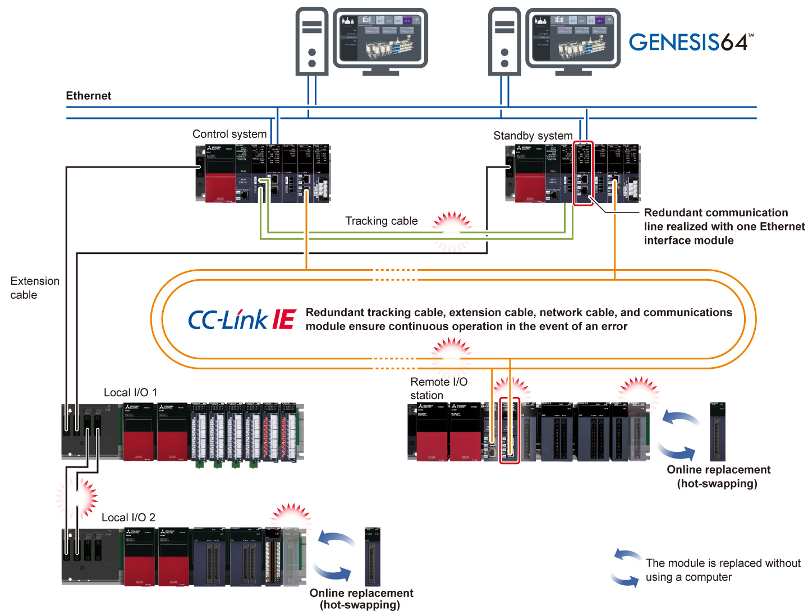
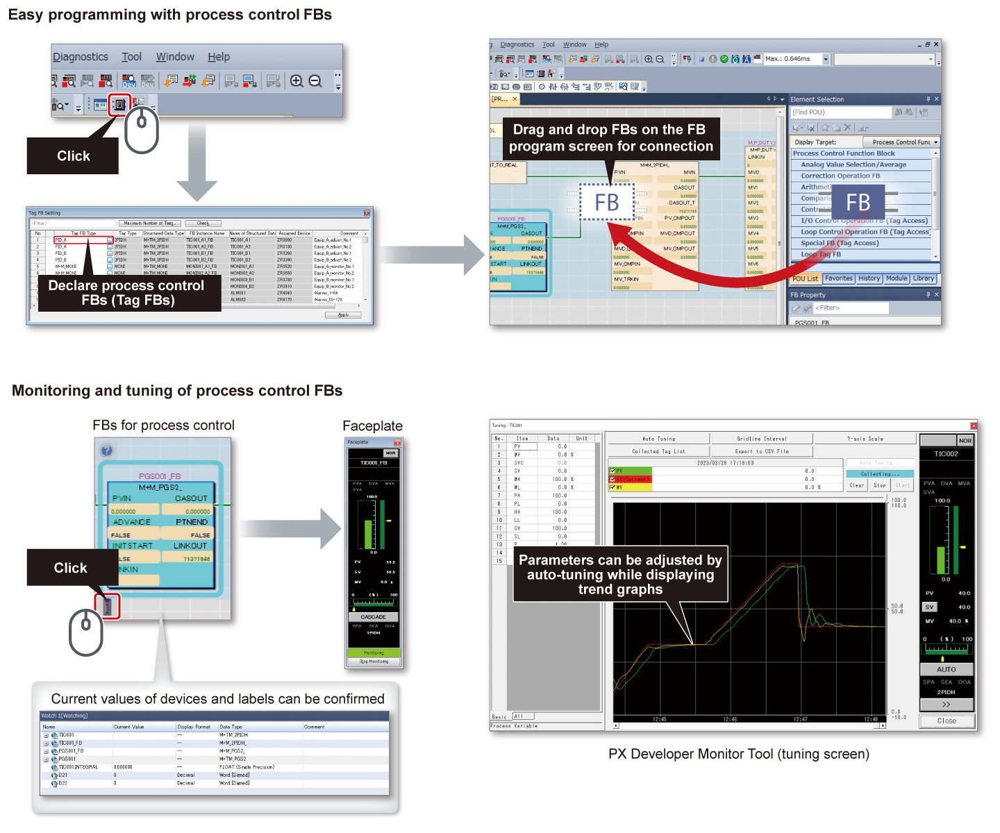
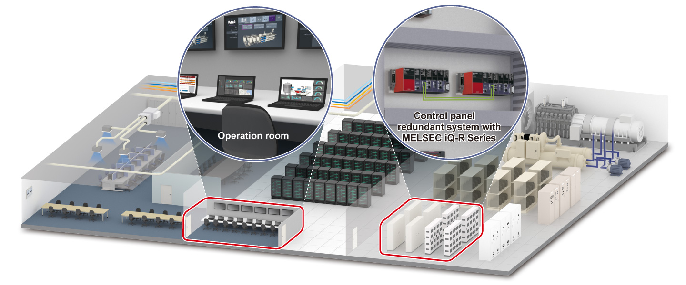

Controllers MELSEC iQ-R Series Product features -Solution-

Improve reliability of factories and infrastructure systems
Point1Realize a highly reliable control system
- In the redundant system, continuous operation is ensured by automatically switching to the standby system when a hardware or network error occurs in the control system, realizing a highly reliable control system with general purpose programmable controllers
- The risk of singe-point failure can be minimized by installing dual control systems consisting with redundant main base units with a power supply module, CPU module, and network module; redundant tracking cable, extension cable, and network cable; and dual head modules of remote stations
- In the event of an error in cables, local I/O stations, and remote I/O stations, online replacement is possible without stopping the CPU module operation

Point2Configure process control system with easy programming
- Engineering software GX Works3 provides an intuitive programming environment where process control programs can be easily created by connecting function blocks such as Tag FBs for process control on the screen by drag & drop operation
- Tag FBs for process control enable monitoring on the faceplate, trend display on the PX Developer monitoring tool, and parameter setting utilizing auto-tuning, thus making adjustment of the system startup easier
- Ladder, function block diagram (process control programming), sequential function chart, and structured text are supported

Point3Configure a highly reliable system with CPU modules optimized for process control
- The process CPU module and SIL2 process CPU module are equipped with the ECC (error correction) function in device/label memory, enabling 1-bit error correction on memory
- Continuous production is assured in the industries such as food, beverage, chemical, and infrastructure where product quality is greatly affected by data errors
Point4Configure a highly reliable system which can supply energy stably and efficiently
- Energy supply and usage such as electricity and gas in factories, buildings, and data centers can be monitored with the SCADA software GENESIS64™ in combination with a redundant system
- GENESIS64™ visualizes energy consumption, helping to estimate the efficient energy supply
- A redundant system ensures continuous operation of the infrastructure by switching the system in the event of an error
Data center implemented with GENESIS64™ and a redundant system
